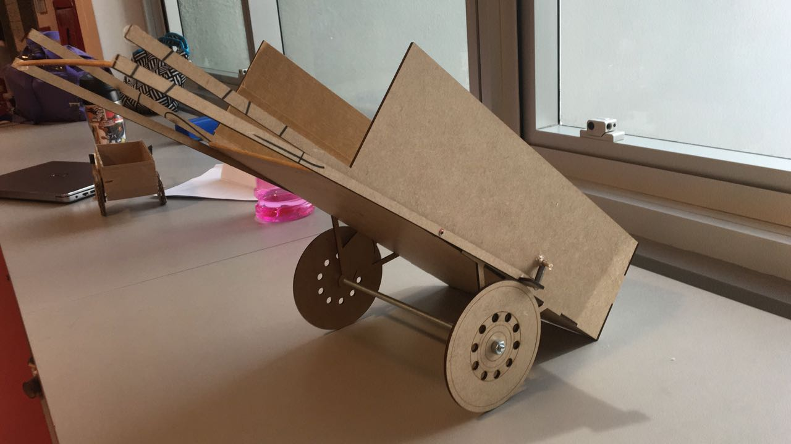
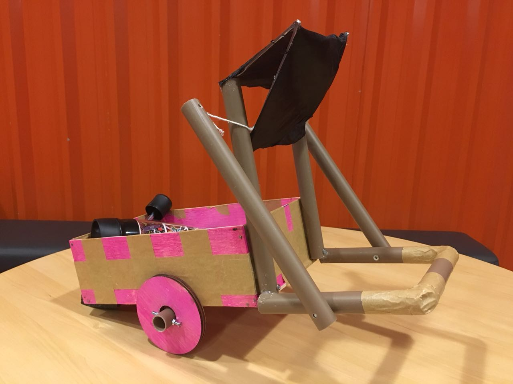

- Melhoria para carroças de catadores
- 1 semestre de engenharia
- Matéria: Natureza do design


Descrição
Com o propósito de melhorar o bem estar e as condições de trabalho dos catadores, os alunos foram divididos em grupos, com objetivo de desenvolver uma ideia acessível de melhoria à carroça. Para definir as necessidades dos carroceiros, os grupos foram às ruas entrevistá-los e coletar informações sobre as carroças. A avaliação final foi sobre um protótipo de carroça construido pelos alunos no FabLab, cujo representava as ideias de cada grupo. Durante o período de férias, as ideias foram efetivadas e aplicadas em carroças de catadores escolhidos entre todos aqueles que foram entrevistados pelos alunos. O projeto foi promovido com parceria do Insper com o movimento Pimp My Carroça.
Objetivos de aprendizagem
- Identificar e abordar problemas de design
- Aplicar métodos formais para facilitar o processo de design
- Documentar o processo de design
- Representar um objeto graficamente por meio de sketch
- Apresentar oralmente os resultados do processo de design
- Utilizar técnicas de fabricação digital para prototipar soluções
- Compreender o projeto de design como forma de aprendizado pelofazer (hands-on)
- Entender o trabalho em equipe como importante fator no processo de design, com crescente consciência dos papéis a serem executados durante o projeto